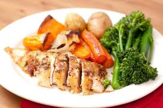

Sheet Pan Parmesan Chicken and Veggies

Description
This one pan meal that you can easily make at home is a marvel at how easy and tasty it is, with the main course being freshly baked and seasoned chicken breast.
The sides containing baked to perfection vegatables seasoned and sauced to your liking!
Ingrediants
- 1 tablespoon dried oregano
- 1 tablespoon dried parsley
- 1 teaspoon paprika
- 1/2 teaspoon garlic powder
- 1/4 teaspoon seasoned salt, or to taste
- 1/4 teaspoon ground black pepper, or to taste
- 1/2 pound fresh green beans, trimmed
- 1 small red potato, diced
- 1 sweet bell pepper, chopped
- 1 cup broccoli florets, chopped
- 1 tablespoon minced garlic
- 3 tablespoons olive oil
- 1/3 cup all-purpose flour
- 4 tablespoons butter, melted
- 1 cup panko bread crumbs
- 1 cup freshly grated Parmesan cheese, divided
- 1 1/2 pounds skinless, boneless chicken breast, pounded flat and excess fat removed
Dipping sauce(Optional):
- 1/2 cup mayonnaise (optional)
- 1/4 cup ketchup (optional)
- 1/2 tsp garlic powder (optional)
- 1/4 tsp Worcestershire sauce (optional)
Steps
- Preheat the oven to 400 degrees F (200 degrees C). Line a sheet pan with parchment paper.
- Combine oregano,parsley,paprika,garlic powder,seasoned salt,and pepper in a small bowl.
- Place green beans, potato, bell pepper, broccoli, and garlic onto the prepared sheet pan. Drizzle with olive oil and sprinkle with 1/2 of the seasoning mix; toss to coat.
- Place flour into a bowl. Place melted butter into a second bowl. Mix pank, 2/3 cup Parmesan cheese, and the remaining seasoning mix together in a third bowl.
- Slice chicken into 1 1/4 strips, then coat in flor. Dredge floured strips in melted butter, dripping excess butter back in the bowl. Press into Parmesan-panko mixture until heavily coated on both sides.
- Push veggies to one half of the sheet pan. Place coated chicken strips onto the other side. Sprinle any remaining Parmesan-panko mixture over chicken, pressing to adhere.
- Bake in the preheated oven for 10 minutes. Flip chicken strips and stir veggies, then continue to bake until chicken juices run clear and veggies are crisp-tender, 10 to 15 more minutes. an instant-read thermometer inserted into the center of the chicken should read at least 165 degrees F(74 degrees C).
- Meanwhile, make the dipping sauce: Whish mayonnaise, ketchup, garlic powder, and Worcestershire sauce together in a small bowl.
- Remove chicken and veggies from the oven. Toss veggies with remaining 1/3 cup Parmesan cheese. Server with dipping sauce.
Recipe Tips
You can use mini sweet peppers in place of the regular bell pepper.
To save time, use chicken tenders instead of boneless chicken breasts.